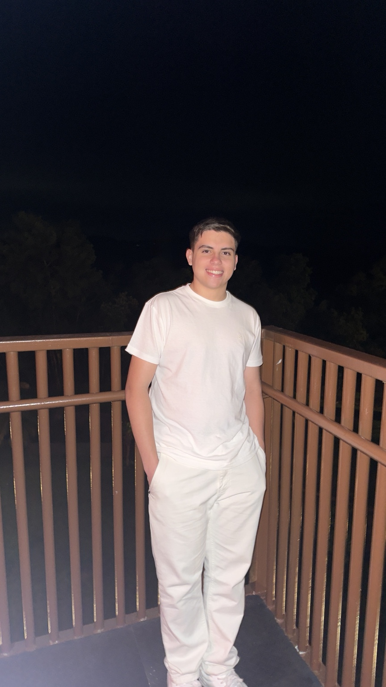
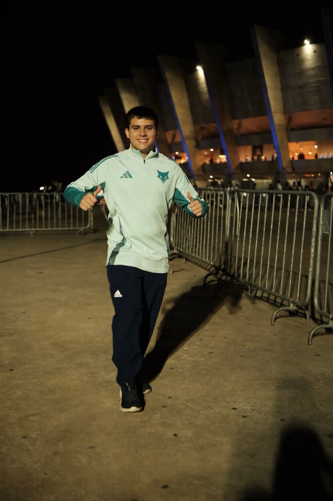

</>
Tecnologia
Interesse em desenvolvimento web, programação, inovação e soluções digitais aplicadas a problemas reais.
Tecnologia • Games • Esportes
Estudante de Ciência da Computação na PUC Minas, interessado em tecnologia, desenvolvimento web e projetos que conectam criatividade, comunicação e inovação.

Olá! Meu nome é Matheus Lages. Concluí o Ensino Médio no Colégio Novos Tempos e atualmente curso o 2º período de Ciência da Computação na PUC Minas.
Tenho interesse em tecnologia, desenvolvimento web, games e esportes. Busco ampliar meus conhecimentos por meio de projetos acadêmicos e práticos, sempre procurando unir organização, criatividade e funcionalidade.
Também atuo no Colégio Novos Tempos, participando das áreas de Comunicação, Marketing e Esportes e de Tecnologia da Informação, experiências que me permitem trabalhar com diferentes demandas e desenvolver habilidades técnicas e de comunicação.
Hello! My name is Matheus Lages. I completed high school at Colégio Novos Tempos and I am currently in the second semester of Computer Science at PUC Minas.
I am interested in technology, web development, gaming and sports. I seek to expand my knowledge through academic and practical projects, combining organization, creativity and functionality.
I also work at Colégio Novos Tempos in Communication, Marketing and Sports and in Information Technology, which allows me to develop both technical and communication skills.

Interesse em desenvolvimento web, programação, inovação e soluções digitais aplicadas a problemas reais.
Interesse pelo universo dos jogos, pela tecnologia envolvida em sua criação e pelas experiências interativas.
Vivência com comunicação e organização esportiva, além de interesse por competição, disciplina e trabalho em equipe.
Projeto de site institucional voltado ao Colégio Novos Tempos, reunindo conteúdo e estrutura para presença digital da instituição.
Ver no GitHubRepositório desenvolvido para a primeira avaliação da disciplina de Desenvolvimento de Interfaces Web, com arquivos em HTML e CSS e respostas da atividade.
Ver no GitHubProjeto pessoal desenvolvido para apresentar formação, experiências, projetos e contatos em uma interface interativa inspirada em tecnologia, games e esportes.
Acessar meu GitHubÁrea: Comunicação, Marketing e Esportes
Atuação em atividades relacionadas à comunicação institucional, produção e organização de conteúdos, divulgação de ações e apoio a eventos e atividades esportivas do colégio.
Área: Tecnologia da Informação
Participação em demandas de tecnologia da instituição, oferecendo apoio em atividades técnicas e contribuindo para soluções digitais e projetos ligados ao ambiente escolar.
Destaques: Site-IENT e Prova1-DIW
Desenvolvimento de projetos acadêmicos e práticos que reforçam conhecimentos em interfaces web, organização visual e construção de páginas funcionais.